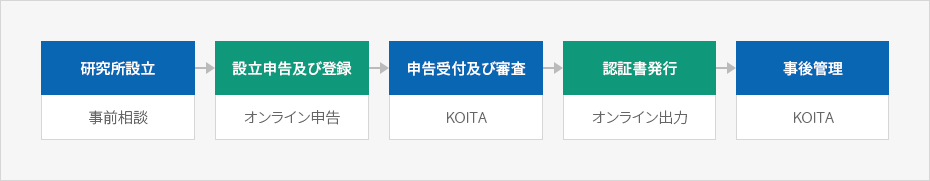
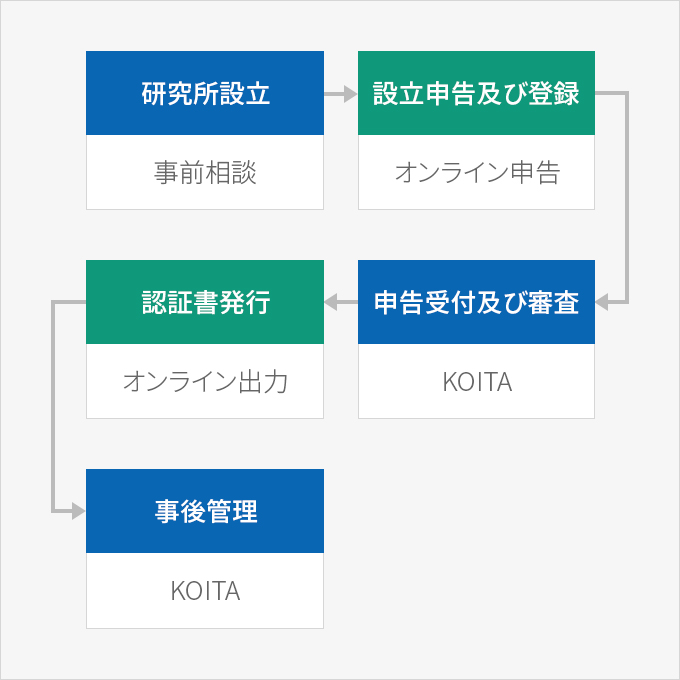
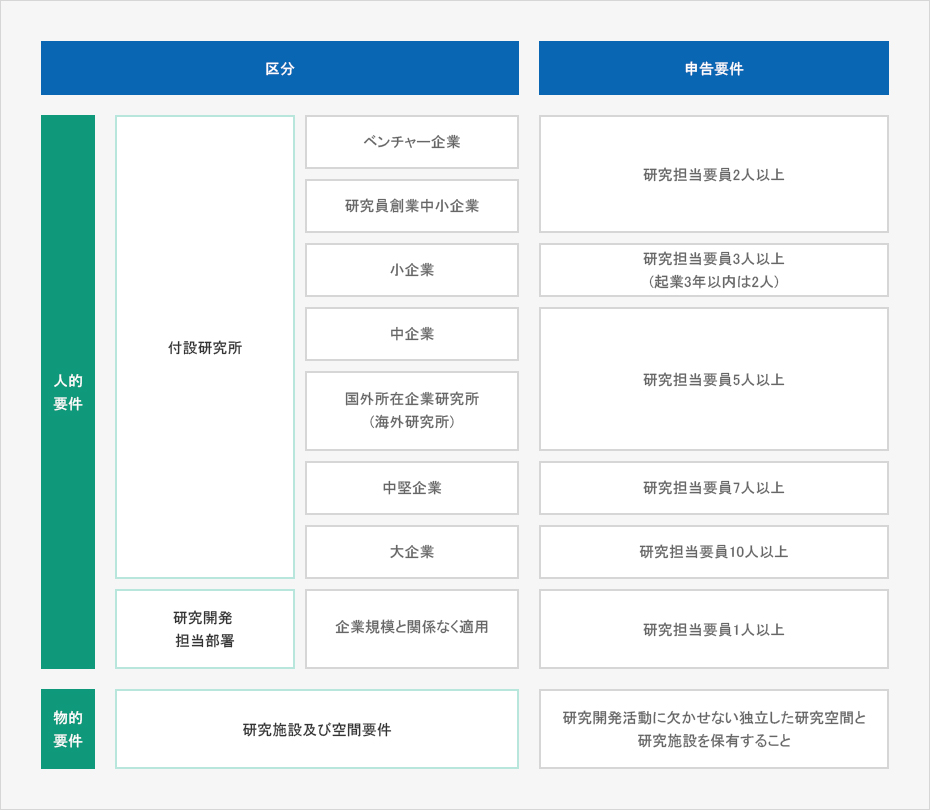

企業付設研究所など
- Home
- インセンティブ
- R&Dセンター
- 企業付設研究所など
一定条件を備えた企業の研究所又は研究開発専門部署は(社)韓国産業技術振興協会に申告・登録して研究開発活動に対して各種の支援を受けることができる。
※ 現況 : 企業付設研究所40,693ヵ所、研究開発専門部署 27,787ヵ所(2019年9月現在)
※ 関連規定 : 「基礎研究振興及び技術開発支援に関する法律」第14条の2、同法施行令第16条の2
※ 関連規定 : 「基礎研究振興及び技術開発支援に関する法律」第14条の2、同法施行令第16条の2
申告方法
研究所 / 専門部署を設立した後、一定条件を備えた状態で準備書類を作成し、(社)韓国産業技術振興協会(KOITA： Korea Industrial Technology Association)に申告しなければならない。申告はオンラインシステムを通じてのみ可能である。
申告手続き



- 処理期限 : 申告書が受け付けられた日から7日以内に処理される。ただし、申請書及び関連書類の不備による企業側の補完期間は処理期間に算入しない。
- 申告手続き - 事前相談
- 設立申告登錄- オンライン申告
- 申告受付及び審査 - koita
- 認証書発行 - オンライン出力
- 事後管理 - koita

お問い合わせ先
(付設研究所 / 研究開発専門部署の申請)KOITA研究所認定チーム02-3460-9141～46、9013～17
認定要件
企業付設研究所 / 研究開発専門部署として認定されるためには、人的要件と物的要件をすべて満たさなければならない。

| 区分 | 申告要件 | ||
|---|---|---|---|
| 人的 要件 | 付設研究所 | ベンチャー企業 | 研究担当要員2人以上 |
| 研究員創業中小企業 | |||
| 小企業 | 研究担当要員3人以上 (起業3年以内は2人) | ||
| 中企業 | 研究担当要員5人以上 | ||
| 国外所在企業研究所(海外研究所) | |||
| 中堅企業 | 研究担当要員7人以上 | ||
| 大企業 | 研究担当要員10人以上 | ||
| 研究開発 担当部署 | 企業規模と関係なく適用 | 研究担当要員1人以上 | |
| 物的 要件 | 研究施設及び空間要件 | 研究開発活動に欠かせない独立した研究空間と研究施設を保有すること | |

支援内容
企業付設研究所 / 研究開発専門部署を登録した企業は租税、関税、人材、資金、販路、技術などで支援を受けることができる。
租税及び関税支援
| 支援項目 | 関連規定 | |
|---|---|---|
| 研究及び人材開発費税額控除 | 一般研究 | 「租税特例制限法」第10条(別表6) |
| 新成長動力 | 「租税特例制限法」第10条(別表7) | |
| 研究開発及び人材開発 設備投資 税額控除 | 「租税特例制限法」第25条 | |
| 企業付設研究所用不動産の地方税減免 | 「地方税特例制限法」第46条第①項 | |
| 技術移転及び貸与などに対する課税特例 | 「租税特例制限法」第12条 | |
| 外国人技術者の所得税減免 | 「租税特例制限法」第18条 | |
| 研究開発関連出捐金など課税特例 | 「租税特例制限法」第10条の2 | |
| 研究開発特区先端技術企業などの法人税減免 | 「租税特例制限法」第12条の2 | |
| 研究専門要員の研究活動費の所得税非課税 | 「所得税法施行令」第12条第12号ダ(다)目 | |
| 産業技術研究開発物品の関税減免 | 「関税法」第90条第1項第4号 | |
資金支援
| 事業部処 | 主な内容 | 関連事業情報 |
|---|---|---|
| 科学技術情報通信部 | 技術開発事業支援 |
|
| 産業通商資源部 | 産業など中核技術開発 など |
|
| 中小ベンチャー企業部 | 新製品技術開発事業など |
|
人材支援
| 支援項目 | 関連内容 | お問い合わせ先 |
|---|---|---|
| 専門研究要員制度 | 兵役代替服務制度 | KOITA 02-3460-9124 |
| 中小企業研究人材支援事業(採用、派遣) | 研究人材採用時、人件費支援 | KOITA 02-3460-9082 |
| 中堅企業中核研究人材成長支援事業 | 研究人材採用時、人件費支援 | KIAT 02-6009-35122 |
| 青年ネイルチェウム共済 | 青年資産形成支援 | 中小ベンチャー企業部 1357 |
| ICT単位連携プロジェクトインターンシップ | インターンプログラム経費支援 | 情報産業連合会 02-2132-0726 |
| 産業専門人材力量強化事業 | 専門人材養成支援金 | KIAT 02-6009-4375 |
| 海外トップ科学者招聘(Brain Pool)事業 | 誘致経費、研究支援費 | 研究財団 042-869-6377 |
| 雇用推薦書(Gold Card)制度 | 海外技術人材雇用推薦状 | KOTRA 02-3460-7338 |
| 青年追加雇用奨励金支援事業 | 採用奨励金支援 | 雇用労働部 1350 |
| 理工系人材仲介センター | 理工系人材仲介 | KOITA 02-3460-9033 |
技術支援
| 事業部処 | 主な内容 | 関連事業情報 |
|---|---|---|
| 産業通商資源部 | 信頼性バウチャー事業(素材開発支援) | www.信頼性バウチャー.org |
| 科学技術情報通信部 | K-Globalプロジェクト |
k-global@nipa.kr www.nipa.kr |
| 産学研協力クラスター支援 | www.koita.or.kr | |
| 学研共同研究所連携後続研究開発事業 | ||
| 中小ベンチャー企業部 | 中小企業コンサルティング支援 | www.smbacon.go.kr |
| 海外規格認証獲得支援 | www.exportcenter.go.kr | |
| 特許庁 | IP-R&D戦略支援事業 | http://biz.kista.re.kr/ippro |
| 事業化連携特許技術評価支援 | www.kipa.org |